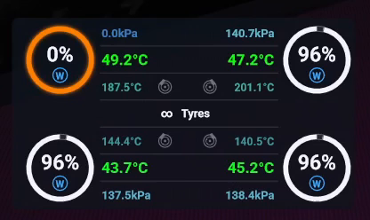
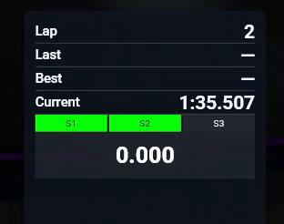
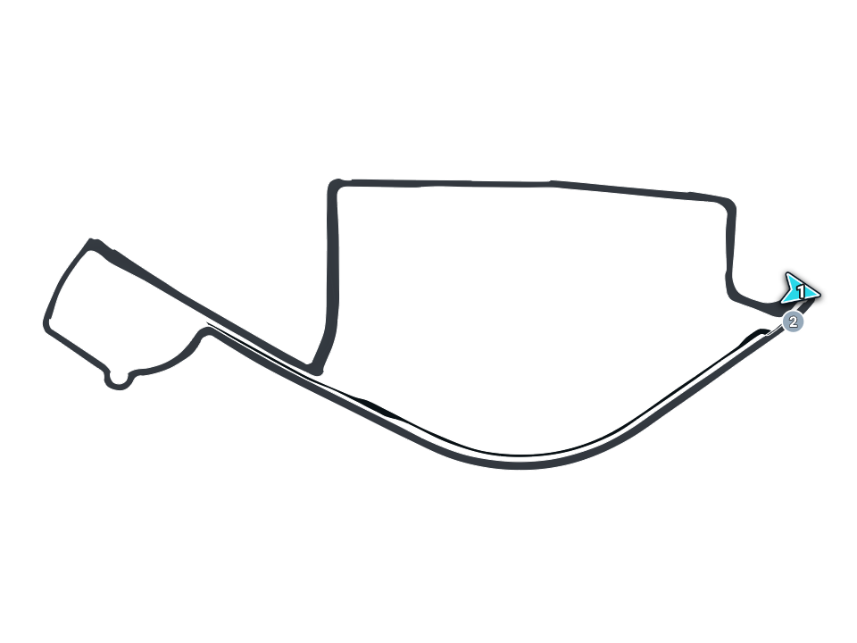
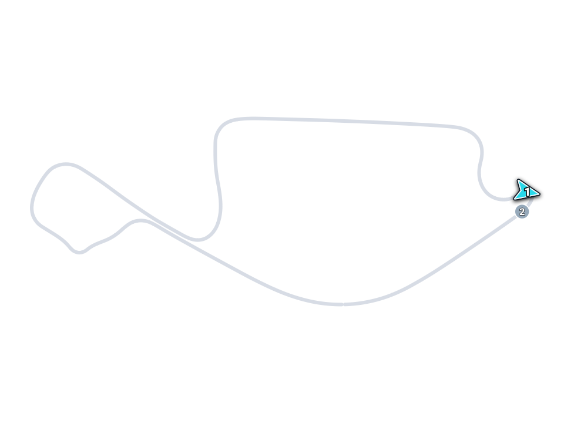
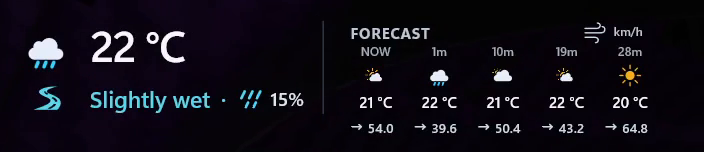
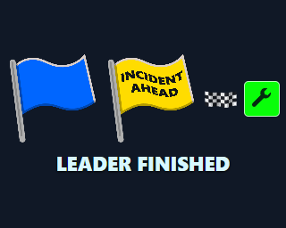
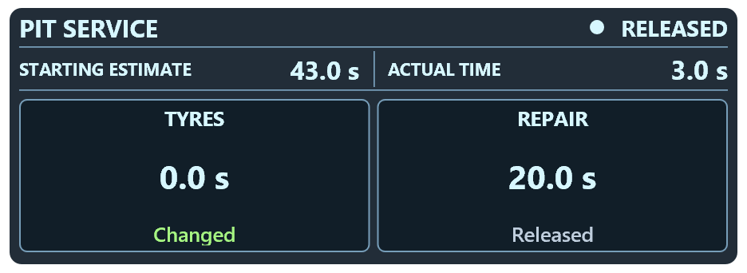
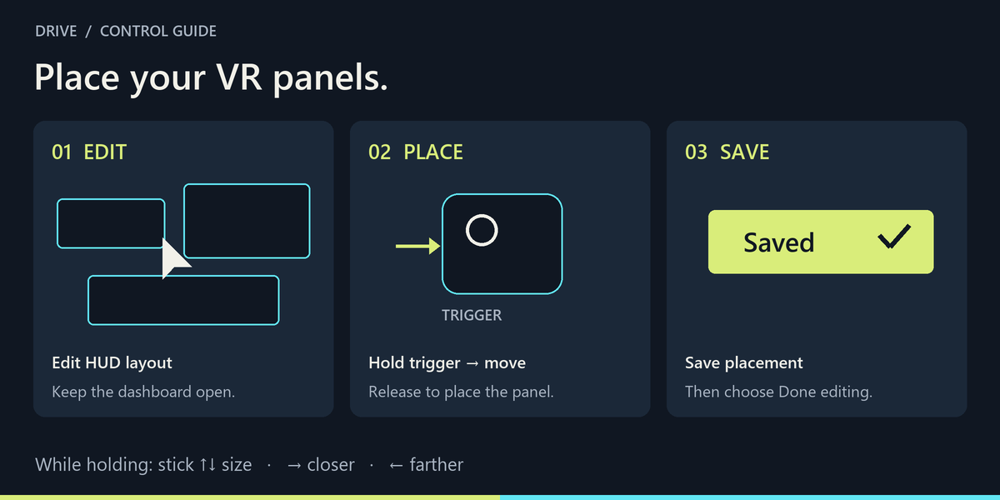

Rookline Drive · 0.6.48
Feature guide
Find an instrument, warning or cockpit control.
Speedo & electronics

- Speed, gear and shift lights
- Speed, gear and RPM share the centre of the instrument. The shift cue, RPM arc and manufacturer artwork follow the selected car style.
- Fuel, virtual energy and temperatures
- Read the remaining fuel and estimated laps, plus virtual energy on cars that use it. The instrument includes oil and coolant temperatures.
- Driver inputs and assistance
- Pedal indicators, directional force feedback, TC, Cut, Slip and supported ABS show what the car is doing as you drive.
- Manufacturer designs
- Choose car-specific or default styling. See the earlier BMW, Ferrari, Porsche, Aston Martin, Cadillac and Alpine designs in the design gallery.
Tyres, brakes & damage


- Each fitted tyre
- Compound, remaining wear, pressure, tyre temperature and brake temperature sit together at each corner. Garage views can show fitted compound and condition when live wheel readings are unavailable.
- Punctures and missing parts
- Find the affected tyre, bodywork or suspension corner. Wheel and rear-wing detachments have distinct cues.
- Engine condition
- A stall, overheating and suspected engine failure have different meanings. An ordinary stall preserves the engine’s prior condition.
- Damage and setting notices
- Critical damage comes first. Longer lists scroll once and hold the final items. Changes to driving settings have their own feedback.
Lap timing, tower & Relative


- Lap timing
- Current, last and best lap, sector progress and delta. The previous completed lap remains available when the current lap is invalidated.
- Multiclass tower
- Choose your class or multiclass. Multiclass reserves eight rows for your class and three for each other class. Switch between driver and team names.
- Six timing views
- Best / Status, Gaps, Intervals, Grid Progress, Pit Stops and Virtual Energy. Eligible views depend on the session. Fix one view, cycle a selection, or hold and resume the cycle.
- Relative
- Your car stays in the centre with up to three cars ahead and three behind on the road. Read each car’s class position, number, name and available gap.
Traffic, map views & marshal posts




- Three perspectives
- Choose All cars, Your class or Follow your car. The head-up view keeps your direction pointing up and gives more space to the road ahead.
- Road edges and pits
- Full fidelity draws natural road edges and available pit routes. Lite uses the game route as a single line. The Mulsanne layout includes the shared Le Mans pit lane.
- Marshal-zone warnings
- LMU supplies the flags. Drive uses layout-specific marshal references to highlight the affected road and its approach. The incident marker follows the slow car while other cars pass.
- Online section pace
- Gold and pink dashes mark corroborated faster or slower sections online. Wetness uses a separate colour scale.
- Markers and aerial imagery
- Choose a triangle, car, brackets or roundel for your marker, with a class-colour option. Adjust VR car-icon size. The Imola aerial backdrop has independent full-map and head-up visibility and opacity.
Weather, forecast & drying


- Now and the session ahead
- Current weather includes temperature, rain and reported road condition. The five-part forecast shows the expected temperatures, weather symbols, wind speed and compass direction, with time to each forecast point.
- A persistent surface
- An estimate evolves along and across the road as rain falls and traffic passes. Tyre observations, braking and cornering help distinguish the driven line. Changes persist from lap to lap.
- Conditions that affect drying
- Air and track temperature, cloud and daylight, session humidity, wind and RealRoad conditions influence the estimate. Terrain adds fixed elevation, grade and camber where supported.
- Read the colours
- White is dry, teal damp and blue progressively wetter. The colours describe an estimate. Choose Full fidelity and enable wetness for detail. Lite and very thin full-map views omit detailed wetness.
Flags, race messages & contacts


- Flags and finish notices
- Green, yellow, blue, red, black and chequered flags, full-course yellow and safety car use distinct artwork and captions. Final-lap, leader-finished and pit-request cues share the message area.
- Penalties and track limits
- Track-limit rulings and race penalties use LMU’s reported decisions. Active safety flags take priority over the pit-request wrench.
- Contact review
- Review vehicle and environment contacts in the companion or VR dashboard. Entries give session time, available lap information and newly observed damage. Separately observed damage remains identifiable.

Pit request, service & release


- Before and during service
- The pit wrench shows a requested stop. The board shows the starting estimate, elapsed time, requested tyres, fuel, repairs and supported virtual energy.
- Completed work
- See fitted tyres change state, repair and wing results when reported, and energy reaching its target. The released board compares the starting estimate with the actual stop time.
- Pit exit
- The final summary stays visible for at least ten seconds after box release. On a longer exit it stays through limiter-off.
VR placement, desktop & controls


- Desktop and SteamVR
- Automatic output follows LMU. Use the SteamVR dashboard in VR, including OpenXR through SteamVR, or the game-window overlay on a monitor. Each output keeps its own saved placement and visibility.
- Layout editing
- Move and resize individual panels. In VR also change depth and choose flat or curved panels. Edit before entering LMU, recenter while parked and save all moved panels together. On desktop use the tray editor.
- Eight HUD views
- Full, Race Overview, Timing & Position, Car & Field, Car Condition, Lap Focus, Minimal and Clear. Choose the panels and views in your cycle. Switching views preserves placement.
- Wheel, button box and keyboard
- Bind Previous/Next HUD view, map cycling, tower names and views, timing hold/resume and VR recenter. SteamVR handles VR controller bindings.
- Visibility and recovery
- Show or hide panels, cycle out of Clear, or refresh the HUD from the dashboard. Labelled guides in edit mode let you recover panels that are normally hidden.
Appearance, accessibility & application settings
- Colour vision
- Standard, Protanopia, Deuteranopia, Tritanopia and Monochrome palettes cover the HUD and dashboard. Flag names remain visible in assistance modes.
- Readability
- Adjust panel background opacity while numbers and icons remain opaque. Choose coloured tyre readings, marker appearance and either continuous flag waving or a sequence with an ending.
- Companion and startup
- Use the Windows notification area to restore Drive. Choose launch at startup, start minimized and minimize to tray. Open VR Help from the companion or the headset.
- Updates and diagnostics
- Check for installer updates in Settings → About → Application, with an optional test-release channel. Updates preserve layouts and settings. Normal logs cover race events; verbose logging adds wetness checkpoints and polling timings.
No matching feature. Try a different word or clear the search.